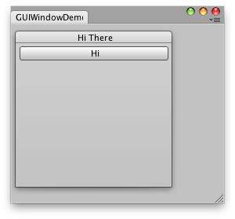

EditorWindow.BeginWindows
public void BeginWindows
();
描述
标记所有弹出窗口的开始区域。
GUI.Window 在编辑器中的行为与在游戏中略有不同。在游戏中，GUI.Window 会在屏幕上弹出一个窗口。而在编辑器中，
GUI.Window 会在其中一个编辑器窗口中显示一个子窗口。Begin/EndWindows 用于确定这些窗口的目标位置。
您需要为 BeginWindows/EndWindows 对中的 GUI.Window 或 GUILayout.Window 执行所有调用。如下所示：
\
包含一个窗口和一个按钮的简单编辑器窗口。
using UnityEditor; using UnityEngine; using System.Collections;
public class GUIWindowDemo : EditorWindow { // The position of the window public Rect windowRect = new Rect(100, 100, 200, 200); void OnGUI() { BeginWindows();
// All GUI.Window or GUILayout.Window must come inside here windowRect = GUILayout.Window(1, windowRect, DoWindow, "Hi There");
EndWindows(); }
// The window function. This works just like ingame GUI.Window void DoWindow(int unusedWindowID) { GUILayout.Button("Hi"); GUI.DragWindow(); }
// Add menu item to show this demo. [MenuItem("Test/GUIWindow Demo")] static void Init() { EditorWindow.GetWindow(typeof(GUIWindowDemo)); } }
BeginWindows/EndWindows 对的位置决定了弹出窗口的显示位置；所有窗口都会裁剪到
由 GUI.BeginGroup 或 GUI.BeginScrollView 定义的裁剪区域。下面是该情况的一个小示例 \
包含一个窗口和一个按钮并使用滚动条的简单编辑器窗口。
\
包含一个窗口和一个按钮并使用滚动条的简单编辑器窗口。
using UnityEditor; using UnityEngine; using System.Collections;
public class GUIWindowDemo2 : EditorWindow { // The position of the window public Rect windowRect = new Rect(100, 100, 200, 200);
// Scroll position public Vector2 scrollPos = Vector2.zero;
void OnGUI() { // Set up a scroll view scrollPos = GUI.BeginScrollView(new Rect(0, 0, position.width, position.height), scrollPos, new Rect(0, 0, 1000, 1000));
// Same code as before - make a window. Only now, it's INSIDE the scrollview BeginWindows(); windowRect = GUILayout.Window(1, windowRect, DoWindow, "Hi There"); EndWindows(); // Close the scroll view GUI.EndScrollView(); }
void DoWindow(int unusedWindowID) { GUILayout.Button("Hi"); GUI.DragWindow(); }
[MenuItem("Test/GUIWindow Demo 2")] static void Init() { EditorWindow.GetWindow(typeof(GUIWindowDemo2)); } }